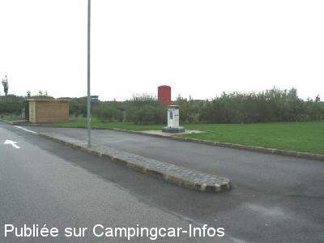
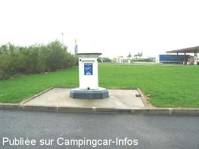
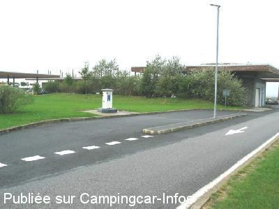

AA = Aire de services sur autoroute de :
A16 Boulogne sur Mer<=>Abbeville BAIE DE SOMME
(N° 72)
Accès/adresse :
AUTOROUTE A 16
Accès dans les deux sens
Accès dans les deux sens
Latitude : (Nord) 50.17032° Décimaux ou 50° 10′ 13′′
Longitude : (Est) 1.75548° Décimaux ou 1° 45′ 19′′
Tarif :
Type de borne : EURO-RELAIS
Services :


Autres informations :

Le 19/10/2003 par nomade 59

Le 19/10/2003 par nomade 59

Le 19/10/2003 par nomade 59
de
bignard
le 21/12/2008 :
Les renseignements sont toujours d'actualités, mais il faut préciser que l'éclairage est trés limité, voir absent dans le secteur des stationnements éloignés
Les renseignements sont toujours d'actualités, mais il faut préciser que l'éclairage est trés limité, voir absent dans le secteur des stationnements éloignés
de
le 01/05/2007 :
We stayed for one night after a late night crossing. Very good site, lots of room. One down side, when we awoke the following morning, the cab door of the motorhome had been forced open and money, GPS and odds and ends (all hidden away) all gone. We did not hear a thing!!! Be aware.
We stayed for one night after a late night crossing. Very good site, lots of room. One down side, when we awoke the following morning, the cab door of the motorhome had been forced open and money, GPS and odds and ends (all hidden away) all gone. We did not hear a thing!!! Be aware.
de
Barry Bullen
le 24/03/2005 :
We stayed here in march 7th 2005 there is a very large parking area for caravans we did not use it because we were alone but stayed near the buldings near the Borne had a good nights sleep.
We stayed here in march 7th 2005 there is a very large parking area for caravans we did not use it because we were alone but stayed near the buldings near the Borne had a good nights sleep.
de
Martine et Francis
le 12/07/2004 :
Bien que située sur l'autoroute , le cadre est très agréable .Les pique-assiettes sont nombreux au moment du pique-nique . En effet , les canards ne sont pas farouches .Quant aux poissons , dans les étendues d'eau ,attendent eux aussi le casse-croûte .
Bien que située sur l'autoroute , le cadre est très agréable .Les pique-assiettes sont nombreux au moment du pique-nique . En effet , les canards ne sont pas farouches .Quant aux poissons , dans les étendues d'eau ,attendent eux aussi le casse-croûte .
de
Nomade 59
le 19/10/2003 :
Il n'y a pas de réceptacle pour les eaux usées qui dégoulinent le long de la chaussée pour terminer dans un regard .......d'eaux pluviales.
Il y a des WC publics à la station-service à 100 m
Il n'y a pas de réceptacle pour les eaux usées qui dégoulinent le long de la chaussée pour terminer dans un regard .......d'eaux pluviales.
Il y a des WC publics à la station-service à 100 m